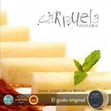

QUESO CARPUELA
Quesos Gómez Moreno es una empresa familiar que atesora más de un siglo de experiencia en la elaboración artesana del auténtico queso manchego. Con las ventajas derivadas de una nueva ampliación y proceso de modernización de nuestras instalaciones, elaboramos unos quesos de gran calidad y suprema exquisitez bajo las marcas Gómez Moreno y Carpuela, adherida a la Denominación de Origen Protegida "Queso Manchego.
La clave de nuestro éxito continúa siendo el rigor selectivo de la materia prima: una leche pura de oveja manchega de nuestra propia ganadería; nacida, criada y sustentada en la típica climatología de La Mancha y alimentada de pastos naturales.
 Pagina principal
Pagina principal